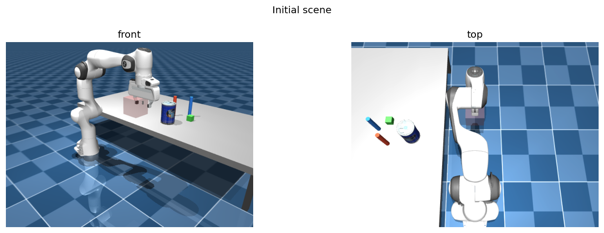
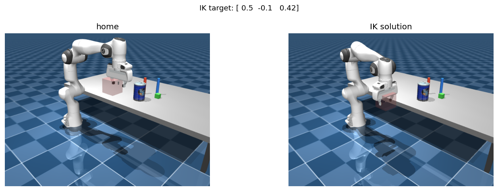
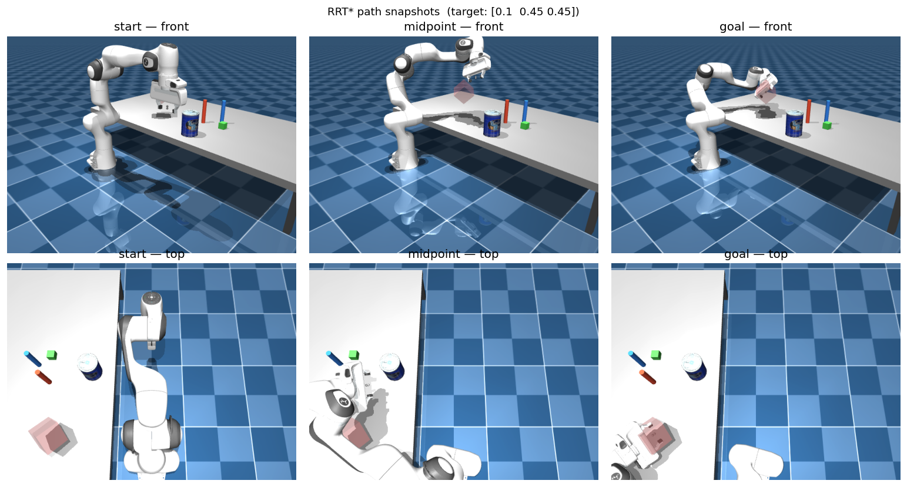
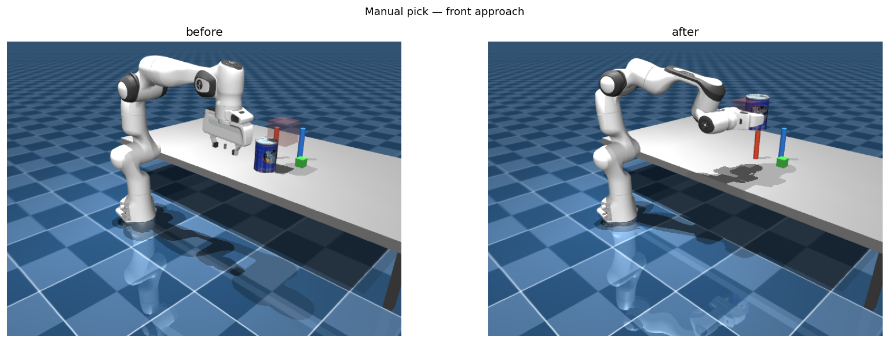
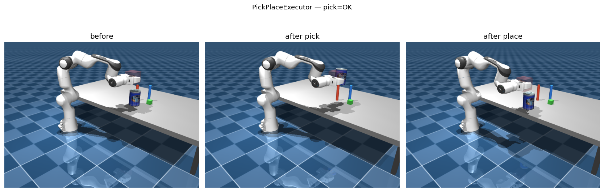

Getting Started with TAMPanda
This tutorial walks from a fresh install to a complete pick-and-place pipeline running in MuJoCo. It covers scene building, IK, RRT* motion planning, grasp planning, and the TAMP integration. Allow about 20 minutes.
Prerequisites
You need Python 3.10 or newer. TAMPanda has been tested on Linux and macOS.
macOS only: Scripts that open an interactive MuJoCo viewer must be launched with mjpython instead of python. Headless scripts — including this tutorial's code — work fine with standard python.
Core dependencies — mujoco ≥ 3.0, mink ≥ 0.0.1, numpy, loop-rate-limiters, matplotlib, opencv-python — are all installed automatically.
Installation
Clone the repository and install in editable mode:
git clone https://github.com/snoato/tampanda.git
cd tampanda
pip install -e .Verify the install:
python -c "from tampanda import ArmSceneBuilder; print('TAMPanda OK')"Remote assets (YCB objects, Google Scanned Objects) download and cache on first use. An internet connection is needed the first time you call add_resource with a remote type.
Building a Scene
ArmSceneBuilder assembles MuJoCo scenes from reusable MJCF templates at runtime — no manual XML editing. Register named resource types, then place instances with position and colour overrides.
from tampanda import ArmSceneBuilder
from tampanda.scenes import (
TABLE_SYMBOLIC_TEMPLATE,
CYLINDER_THIN_TEMPLATE,
BLOCK_SMALL_TEMPLATE,
)
builder = ArmSceneBuilder()
# Register object types from built-in templates
builder.add_resource("table", TABLE_SYMBOLIC_TEMPLATE)
builder.add_resource("cylinder", CYLINDER_THIN_TEMPLATE)
builder.add_resource("block", BLOCK_SMALL_TEMPLATE)
# Place instances — position, optional RGBA, optional name
builder.add_object("table", pos=[0.75, 0.80, 0.00])
builder.add_object("cylinder", pos=[0.40, 0.55, 0.35],
rgba=[0.9, 0.3, 0.2, 1.0], name="cyl_a")
builder.add_object("block", pos=[0.55, 0.55, 0.29],
rgba=[0.3, 0.8, 0.3, 1.0], name="block_a")
# Remote YCB objects download and cache automatically
builder.add_resource("can", {"type": "ycb", "name": "master_chef_can"})
builder.add_object("can", pos=[0.45, 0.40, 0.35], name="can")
env = builder.build_env(rate=200.0)
env.forward() # synchronise physics state
Interactive viewer
To see the simulation live, wrap the step loop in a viewer context. On macOS use mjpython.
with env.launch_viewer() as viewer:
while viewer.is_running():
env.step()Hot-reload: SceneBuilder supports reloading simulation states at runtime for rapid episode generation. See examples/scene_builder.py for a live demo.
Inverse Kinematics
TAMPanda uses Mink for differential IK, accessed via env.get_ik(). The solver finds the joint configuration that places the end-effector at a target Cartesian pose.
import numpy as np
ik = env.get_ik()
target_pos = np.array([0.50, -0.10, 0.42])
target_quat = np.array([0.00, 1.00, 0.00, 0.00]) # gripper pointing down
ik.set_target_position(target_pos, target_quat)
converged = ik.converge_ik(env.rate.dt)
if converged:
q = ik.configuration.q[:7] # 7-DOF joint angles
print(f"Joint angles [rad]: {np.round(q, 4)}")
env.data.qpos[:7] = q
env.forward() # apply to simulation
IK is used internally by RRTStar.plan_to_pose and PickPlaceExecutor. Direct access is useful when you need the joint configuration itself — for example, to seed a custom planner or validate reachability.
Motion Planning with RRT*
RRTStar plans collision-free paths in joint configuration space. plan_to_pose calls IK internally to find a valid goal configuration, then plans a smoothed path to it.
from tampanda import RRTStar
planner = RRTStar(env)
target_pos = np.array([0.10, 0.45, 0.45])
target_quat = np.array([1.00, 1.00, 1.00, 0.00])
path = planner.plan_to_pose(
target_pos, target_quat,
dt=env.rate.dt,
max_iterations=2000,
)
if path is not None:
print(f"Path found: {len(path)} waypoints after smoothing")
env.execute_path(path, planner, step_size=0.05)
env.wait_idle()
else:
print("No path found — try increasing max_iterations")
Key parameters: max_iterations (default 2000), step_size, search_radius, goal_threshold. For dense scenes, increase max_iterations. Path smoothing is applied automatically after planning.
Grasp Planning
GraspPlanner generates ranked grasp candidates from object geometry. Each candidate encodes three poses: approach (gripper open, above the object), grasp (contact point), and lift (post-grasp raise).
from tampanda import GraspPlanner
from tampanda.planners.grasp_planner import GraspType
grasp_planner = GraspPlanner(table_z=0.27)
can_pos = env.get_object_position("can")
can_half = env.get_object_half_size("can")
can_quat = env.get_object_orientation("can")
candidates = grasp_planner.generate_candidates(can_pos, can_half, can_quat)
for c in candidates:
print(f" {c.grasp_type.value:<12} score={c.score:.0f}")
# Select a specific grasp type, or use candidates[0] for top-ranked
candidate = next(c for c in candidates if c.grasp_type == GraspType.FRONT)
Candidates are ranked by a geometry score accounting for approach clearance and object shape. PickPlaceExecutor handles candidate selection and retry automatically — direct use of GraspPlanner is only needed when customising the grasp strategy.
Pick & Place with PickPlaceExecutor
PickPlaceExecutor wraps the full pick-and-place sequence into two calls. Failed candidates are retried automatically in score order.
from tampanda import ArmSceneBuilder, RRTStar, GraspPlanner, PickPlaceExecutor
import numpy as np
# (Assumes env is already built — see Step 2)
planner = RRTStar(env)
grasp_planner = GraspPlanner(table_z=0.27)
executor = PickPlaceExecutor(env, planner, grasp_planner,
use_attachment=True)
ok = executor.pick(
"can",
env.get_object_position("can"),
env.get_object_half_size("can"),
env.get_object_orientation("can"),
)
if ok:
place_pos = np.array([0.45, 0.25, 0.34])
executor.place("can", place_pos)
PickPlaceExecutor — before (left), after pick (centre), after place (right).Lower-level access: Bypass PickPlaceExecutor and call planner.plan_to_pose, env.execute_path, env.controller.close_gripper(), and env.attach_object_to_ee() directly. This is useful for custom grasp strategies or research into individual manipulation phases.
TAMP Integration & DomainBridge
TAMPanda provides two levels of TAMP integration. The domain-specific domains (tabletop, blocks) are ready-made instantiations for specific settings. The DomainBridge is a generic adapter in tampanda.tamp that lets you wire any PDDL domain to TAMPanda's continuous execution layer using Python decorators — no modifications to TAMPanda internals required.
DomainBridge — generic PDDL adapter
DomainBridge loads a PDDL domain file and provides three decorator hooks: @bridge.predicate for code-evaluated symbol truth rules, @bridge.action for action execution callbacks, and @bridge.sampler for object pose sampling. Planning is handled by the unified-planning library.
from tampanda.tamp import DomainBridge
bridge = DomainBridge("blocks_world.pddl", env)
# --- Symbol truth rules (re-evaluated each ground_state call) ---
@bridge.predicate("on")
def eval_on(env, fluents, block_top, block_bot):
top_pos = env.get_object_position(block_top)
bot_pos = env.get_object_position(block_bot)
xy_overlap = np.linalg.norm(top_pos[:2] - bot_pos[:2]) < 0.04
z_stacked = abs(top_pos[2] - bot_pos[2] - 0.05) < 0.02
return xy_overlap and z_stacked
@bridge.predicate("on_table")
def eval_on_table(env, fluents, block):
return env.get_object_position(block)[2] < 0.35
# --- Action-tracked fluent (truth maintained by action effects) ---
bridge.fluent("holding", initial=None)
# --- Action execution callbacks ---
@bridge.action("pick")
def exec_pick(env, fluents, gripper, block):
ok = executor.pick(block,
env.get_object_position(block),
env.get_object_half_size(block),
env.get_object_orientation(block))
delta = {("holding", gripper, block): ok,
("gripper-empty", gripper): not ok}
return ok, delta
# --- Object pose sampler ---
@bridge.sampler("block")
def sample_block(env, placed_so_far, rng):
x = rng.uniform(0.30, 0.60)
y = rng.uniform(-0.20, 0.20)
return np.array([x, y, 0.31])Once registered, plan and execute with:
objects = {"block": ["block_0", "block_1", "block_2"],
"gripper": ["gripper1"]}
goals = [("on", "block_0", "block_1"),
("on", "block_1", "block_2")]
plan = bridge.plan(objects, goals)
# plan = [("pick", ("gripper1", "block_0")),
# ("stack", ("gripper1", "block_0", "block_1")), ...]
for action_name, params in plan:
success, _ = bridge.execute_action(action_name, *params,
objects=objects)
if not success:
breakbridge.sample_random_state(type_counts) uses registered samplers to place objects collision-free at random, making it easy to generate diverse training scenes. bridge.describe() prints a human-readable summary of all registered predicates, actions, and types.
Built-in domain example: BlocksBridge
tampanda.symbolic.domains.blocks.blocks_bridge shows a complete blocks-world wiring using DomainBridge — pick, place, stack, and unstack actions with predicate grounding and a collision-free sampler, in roughly 100 lines. Use it as a reference when building your own domain.
from tampanda.symbolic.domains.blocks.blocks_bridge import make_blocks_bridge
bridge, objects = make_blocks_bridge(env)
plan = bridge.plan(objects, goals=[("on", "block_0", "block_1")])Hardcoded tabletop domain (legacy)
The original tabletop grid domain in tampanda.symbolic.domains.tabletop remains available and is fully functional. It uses its own StateManager and GridDomain classes and does not use DomainBridge.
# Full tabletop TAMP pipeline
python examples/demo_pick_put.py
# Grid-based PDDL planning with live viewer (macOS: mjpython)
mjpython examples/symbolic.pyGymnasium & Reinforcement Learning
tampanda.gym provides a full Gymnasium-compatible environment suite built on top of FrankaEnvironment. It supports standard RL training, goal-conditioned learning with HER, and symbolic plan-guided reward shaping.
Basic environment
TampandaGymEnv wraps any ArmSceneBuilder scene as a gymnasium.Env with configurable observation and action spaces.
from tampanda.gym import TampandaGymEnv
env = TampandaGymEnv(
scene=builder, # ArmSceneBuilder instance
obs=["joints", "ee_pose", "object_poses"],
action_space_type="joint_delta", # or "joint_target", "cartesian_delta"
include_gripper=True,
reward_fn="dense_grasp", # or "sparse_grasp", callable
object_names=["block_0"],
max_episode_steps=500,
)
obs, info = env.reset()
obs, reward, terminated, truncated, info = env.step(env.action_space.sample())Visual observations are supported: pass obs=["rgb", "depth", "pointcloud"] with optional image_size=(84, 84) and pointcloud_n_points=1024. Camera names are passed via cameras=[...].
Goal-conditioned learning with HER
TampandaGoalEnv adds an HER-compatible goal structure. It wraps observations as {"observation", "achieved_goal", "desired_goal"} and implements the batched compute_reward required by HerReplayBuffer.
from tampanda.gym import TampandaGoalEnv
env = TampandaGoalEnv(
scene=builder,
goal_type="object_pose", # or "symbolic_predicates"
goal_objects=["block_0"],
goal_threshold=0.02, # metres, for object_pose mode
obs=["joints", "ee_pose", "object_poses"],
action_space_type="joint_delta",
)
# Works directly with stable-baselines3 HerReplayBuffer
# goal_type="symbolic_predicates" uses a DomainBridge for groundingWrappers
Three wrappers augment any TampandaGymEnv:
from tampanda.gym.wrappers import (
PseudoGraspWrapper, # kinematic attachment on gripper close + proximity
SymbolicRewardWrapper, # reward shaping from symbolic plan progress
ExpertActionWrapper, # expert_action() via RRT* + PickPlaceExecutor
)
env = PseudoGraspWrapper(env, grasp_threshold=0.08)
env = SymbolicRewardWrapper(env, goal_bonus=1.0, dense_scale=0.1)Parallel environments
make_vec_env spawns isolated workers — each gets its own MuJoCo instance and DomainBridge. Works on macOS and Linux.
from tampanda.gym import make_vec_env, TampandaGymEnv
vec_env = make_vec_env(
env_fn=lambda: TampandaGymEnv(builder, obs=["joints", "ee_pose"]),
n_envs=8,
)
# Pass bridge_factory= to TampandaGymEnv to regenerate a fresh
# DomainBridge on each reset() — required for parallel workers.Pass a bridge_factory callable to TampandaGymEnv to connect DomainBridge with the Gym environment. On each reset() a fresh bridge is instantiated, the symbolic plan is computed and stored in info["symbolic_plan"], and SymbolicRewardWrapper uses plan progress for shaping.
Next Steps
You now have a working TAMPanda install and understand the full pipeline from scene to symbolic plan to RL training. Here's where to go next:
| Goal | Where to look |
|---|---|
| basic_ik.py / basic_rrt.py | Live interactive viewer demos |
| grasping_rrt_planner.py | Grasping with ranked candidates in the viewer |
| blocks_world_rrt.py | Multi-object pick-and-place with PickPlaceExecutor |
| demo_pick_put.py | Full tabletop TAMP pipeline end-to-end |
| symbolic.py | Grid-based PDDL planning with live viewer |
| blocks_bridge.py | DomainBridge instantiation for blocks world (reference implementation) |
| object_browser.py | Browse and download YCB / Google Scanned Objects |
| generate_data --help | Parallelized training dataset generation |
| learn_stack_action.py | SAC + HER stacking via TampandaGoalEnv |
| mobile_getting_started.ipynb | Mobile robot (A* navigation, Lidar, IMU) |
| franka_getting_started.ipynb | Interactive notebook for Steps 2–6 of this tutorial |